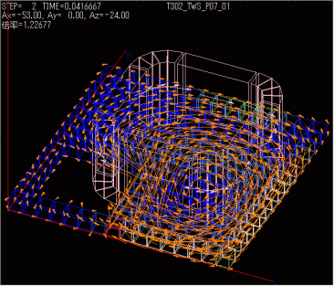
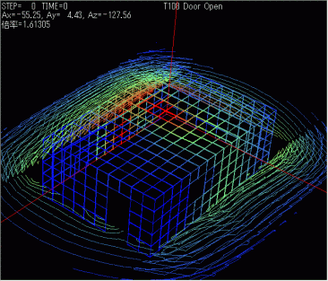
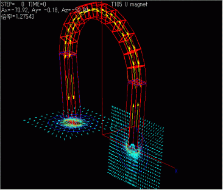

3次元リアルタイム磁場解析ソルバシステム『 Qm 』
3次元リアルタイム磁場解析ソルバシステム『 Qm 』 - 目次
- 概要
- 『 Qm 』について
- プリプロセッサ『 P 』
- 価格 / お問い合わせ
『 Qm 』の適用範囲
- モーター
- リニアモーター
- 発電機器
- ＩＨヒーター
- ＭＲＩ
- 磁気シールド
- リレースイッチ
- 永久磁石製品
- 磁気ヘッド
- 電気製品全般 等
Professional版の評価をご要望される場合は、弊社まで直接お問合わせください。
『 Qm 』の適用事例
◆複雑な運動をともなった渦電流計算
空間メッシュが大量必要な有限要素法では困難な解析事例です。1000mm×1000mm×1mmのアルミ板に永久棒磁石を並進、前後の複雑な運動を伴った時の、アルミ板に生じる渦電流を動磁場解析したモデルです。

＜画像クリックで動画再生＞
◆永久磁石同期モーター
電気学会のベンチマークモデルである永久磁石同期モーターを実際に動磁場解析したモデルです。定量的に実験結果と『 Qm 』でも解析結果が一致していることが証明されました。
Light版でもこのレベルの計算が可能です。
 ＜画像クリックで動画再生＞
＜画像クリックで動画再生＞
◆非対称穴あき導体モデル
電気学会のベンチマークモデル（TEAM Workshop Problem7）を『 Qm 』で解析しました。
厚みのある穴あき導体モデルの近傍にコイルが配置してあり、コイルに交流が流れた時に発生する渦電流を解析しました。
『 Qm 』であれば、このようなモデルでも数分で計算が可能です。

＜画像クリックで動画再生＞
◆磁気シールドモデル
人体の断層撮影をするMRIが設置された場合の磁気影響解析です。部屋自体を高透磁率材でシールドした場合の外部磁場を等高線で示しています。
『 Qm 』はシールドルーム内部のような広い空間でもメッシュが不要なので、モデリングを含め解析が容易です。

＜画像クリックで拡大画像＞
◆馬蹄形磁石モデル
典型的な馬蹄形磁石が作る空間磁場の計算も簡単に行えます。この事例では空間磁場ベクトルや磁場強度や磁石内部の磁束密度を解析しています。
磁石のメッシュが粗くても、磁極近傍の急激に変化する空間磁場を高精度で求めることができます。

＜画像クリックで拡大画像＞
『 Qm 』の主な機能
- 空間メッシュ作成・境界条件設定が不要
- 粗いメッシュ分割でも高精度
- 高速な3次元計算
- 運動及び過電流を含めた計算が容易に可能
- ステアリング機能
- マルチスレッド機能
- リスタートファイル含め、入出力ファイルはテキストで、仕様はすべてオープン
- プリポストオールインワンパッケージのソルバシステム
- 起磁力・物性値・磁場計算点の間隔・対称条件・非線形収束計算条件等をコントロールパネルで編集可能
- 瞬時にポスト画面に反映されるコントロールパネル機能
- 30種以上の多彩な時系列関数と数式演算機能で、運動・電流・一様変動磁場が汎用的に入力可能
- 体積抵抗率・密度等動磁場の計算に便利な物性データベースを完備
- ジュール熱・マックウェル応力・トルクなどの時系列グラフ・空間グラフ・集計を解析しながら確認
- 動磁場解析では各ステップの結果を確認しながらの計算や、一部条件の途中変更などフレキシブルなステアリングが可能
- タイムステップ途中で計算を停止しても、計算済みの結果が保証された状態で自動リスタート
- 計算中でもポスト操作が可能なマルチスレッド機能
- 計算結果の要素や角度などの表示内容まで保存・再現機能
- ポスト処理画面をボタン一つで画像ファイル取り込み
『 Qm 』の稼働環境
◆ハードウェア| 最低条件 | 推奨環境 | |
| CPU | 1GHz 32ビット(x86)プロセッサ 1GHz 64ビット(x64)プロセッサ | デュアルコア以上 （インテルCorei3相当以上) |
| システムメモリ | 1GB以上 | 2GB以上 |
| グラフィック | 128MB以上搭載のビデオカード | Windows Aeroを完全サポートしているビデオカード |
| ハードディスク | 15GB以上の空き容量 | |
◆OS
| OSのbit数 | Qm Light 32bit | Qm Professional 32bit | Qm Light 64bit | Qm Professional 64bit | |
| Windows XP (SP3以降) |
32bit | ○ | ○ | × | × |
| 64bit | × | × | × | × | |
| Windows Vista (SP1以降) |
32bit | ○ | ○ | × | × |
| 64bit | × | × | × | × | |
| Windows 7 Home Premium |
32bit | ○ | ○ | × | × |
| 64bit | ○ | ○ | ○ | ○ | |
| Windows 7 Professional Windows 7 Ultimate |
32bit | ○ | ○ | × | × |
| 64bit | ○ | ○ | ◎ | ◎ | |
| WindowsServer2008(R2) ただし、x86のみ |
64bit | ※ | ※ | ※ | ※ |
『Qm』開発元、株式会社シフトロック社のホームページよりダウンロードとなります。
Professional版の評価をご要望される場合は、弊社まで直接お問合わせください。